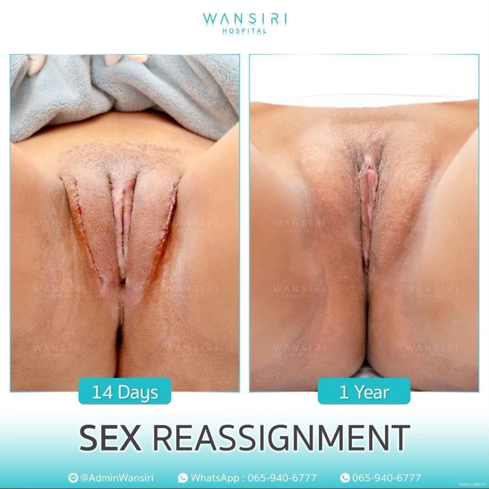
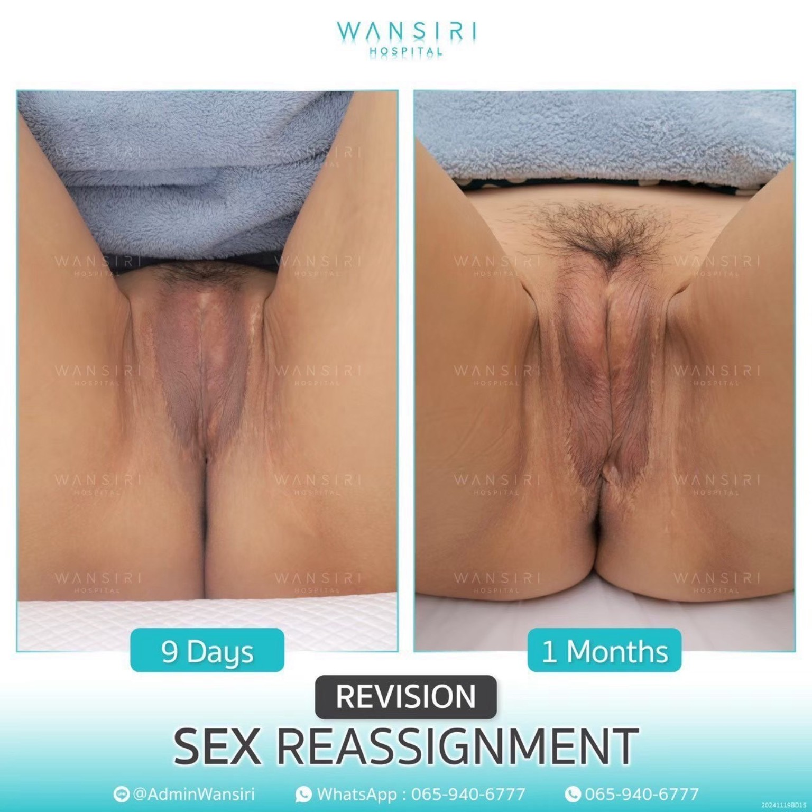
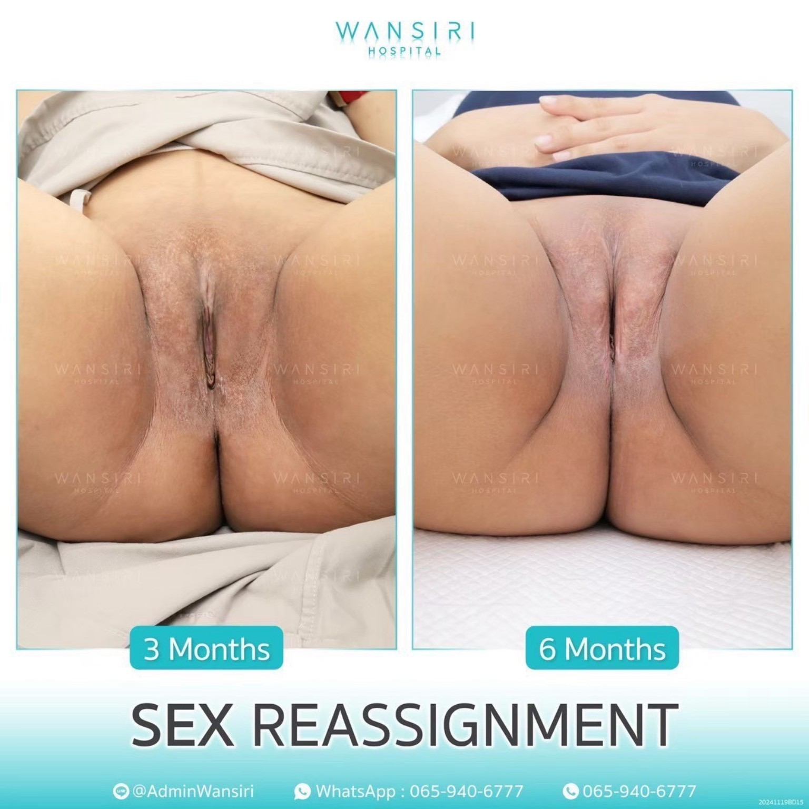
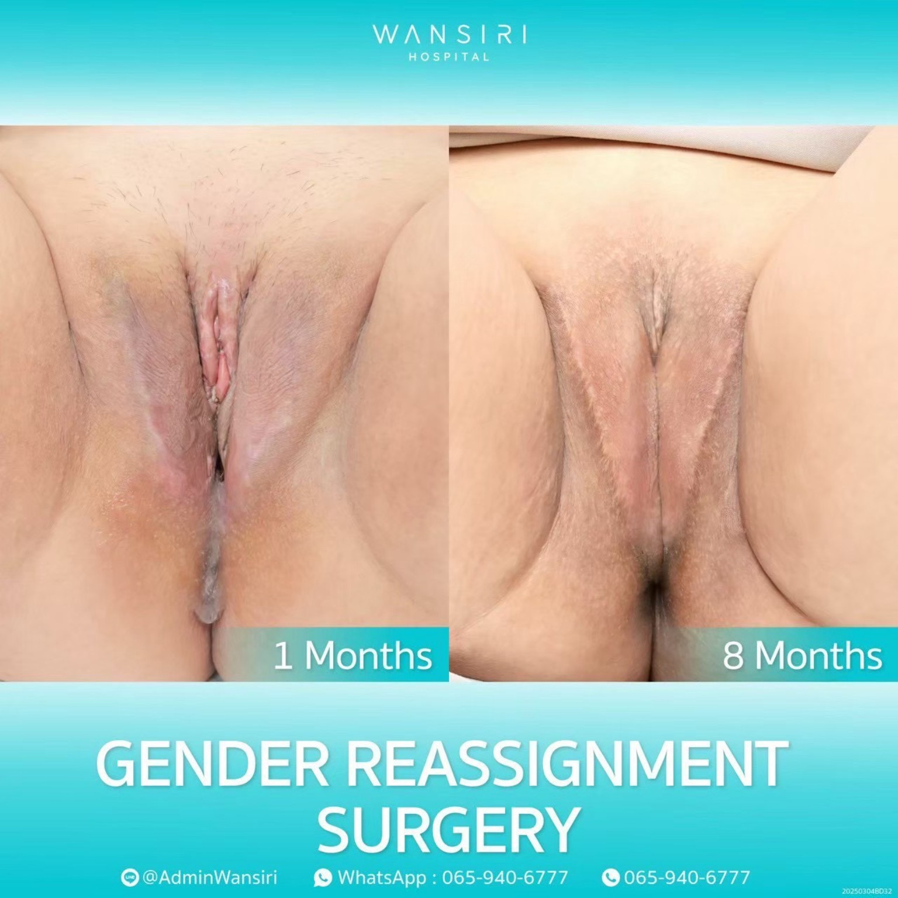
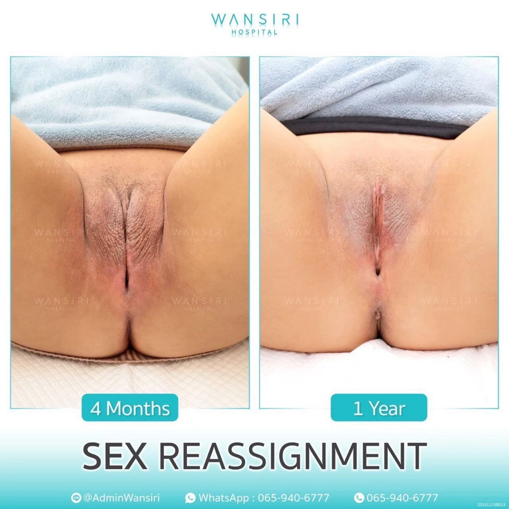
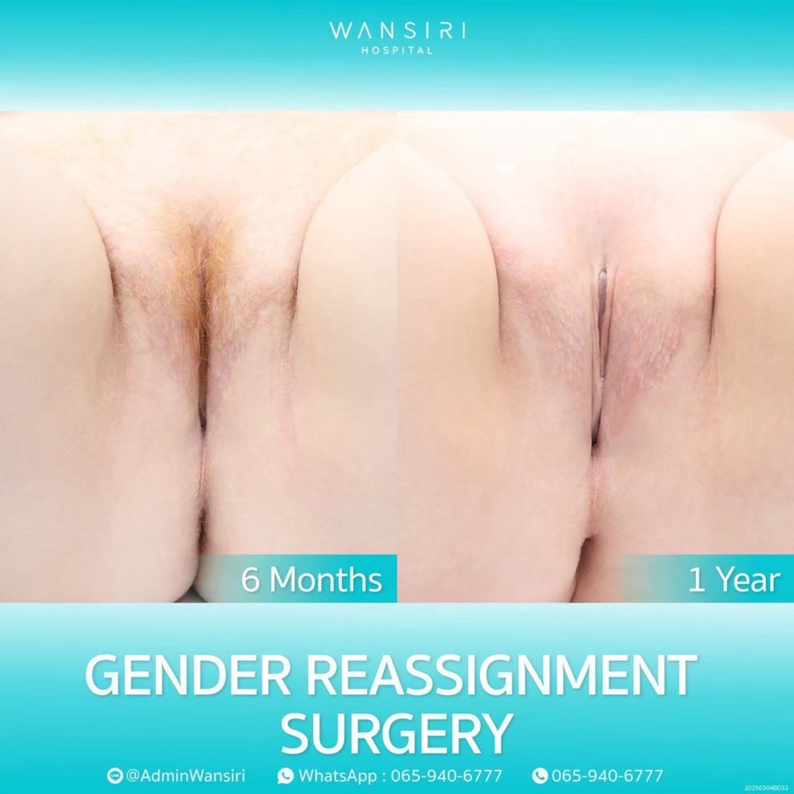

Gender affirming care · Bangkok, Thailand
Your look.Your future.
Male-to-female (MTF) gender affirming surgery, with care shaped around what matters to you.
Understand your optionsA personal decision. Space to ask questions. Time to feel ready.
Read the guideA place to begin
Care that begins
with listening.
Gender affirming surgery is a set of procedures that can help your body feel more aligned with your gender identity. There is no single path, and no requirement to choose surgery.
What this guide covers
For trans women, options may include creating a vagina or vulva, removing the testes, adding breast volume, softening facial features, or changing the prominence of the Adam’s apple and the voice. You may choose one procedure, several over time, or none.
This guide explains the decisions, preparation and recovery involved. Your consultation is where your goals, anatomy and health come together in an individual plan.
Wansiri’s MTF surgery servicesUnderstanding the possibilities
Different options.
Individual decisions.
Start with what matters to you.
Open a procedure to understand its purpose and the questions to discuss.
VaginoplastyVaginal canal + external genitalia
Creates a vaginal canal and external genitalia, including the labia and clitoral area. The technique is selected around anatomy, health and goals. Approaches can use penile or other genital tissue, a colon segment, or peritoneal tissue. Availability and suitability must be confirmed with your surgeon.
Surgery aims to preserve sensation, but sensation, depth and sexual function cannot be guaranteed. Ongoing dilation and follow-up are part of aftercare.
VulvoplastyExternal genitalia, without a vaginal canal
Creates the external vulva without a vaginal canal. It does not allow receptive vaginal penetration and usually does not require vaginal dilation. Discuss availability, expected appearance and aftercare with your surgeon.
Orchiectomy & penectomyRemoval of the testes or penis
Orchiectomy removes the testes. Penectomy removes the penis and may form part of genital reconstruction. These are distinct procedures with permanent effects. Discuss fertility preservation, hormone needs and how either procedure could affect future reconstructive options.
Breast augmentationBreast volume and contour
Uses implants to increase breast volume and shape. Your surgeon considers chest width, skin, existing breast development and your preferred proportions. Hormone treatment and implant choices are discussed during planning.
Facial feminizationFacial shape and proportions
May involve the brow, nose, jawline or other features, depending on your goals. A facial plan can involve one procedure or several. Recovery and risks depend on the procedures selected.
Tracheal shave & voice surgeryNeck profile and voice
A tracheal shave reduces the prominence of the thyroid cartilage; it is different from surgery to change vocal pitch. Voice therapy may also be an option. Ask the team about specialist assessment, service availability and the risks to voice quality.
Vaginoplasty or vulvoplasty?
Compare side by side
Neither option is a measure of your identity. The right choice depends on your goals and the aftercare you can commit to.
| What to consider | Vaginoplasty | Vulvoplasty |
|---|---|---|
| External vulva | Yes | Yes |
| Vaginal canal | Yes | No |
| Vaginal dilation | Ongoing routine | Usually not needed |
| Receptive vaginal penetration | May be possible after healing | No vaginal canal |
| Sensation | Preservation is a surgical goal; outcomes vary for both procedures. | |
The person behind your care
Meet
Dr. Saran.
Saran Wannachamras, M.D.
Plastic and reconstructive surgeon with expertise in MTF gender reassignment surgery.
Medical license no. 15473
Expertise & professional background
Dr. Saran’s hospital profile also lists rhinoplasty, facelift and eye surgery among his areas of expertise.
Diploma of Proficiency in Plastic and Reconstructive Surgery, Medical Council of Thailand, 1995
Graduate Diploma in Clinical Science (Clinical Surgery), Chulalongkorn University, 1993
Plastic and reconstructive surgery physician training, Eastern Virginia Medical School, USA
Society of Plastic and Aesthetic Surgeons of Thailand; Royal College of Surgeons of Thailand
Qualifications reproduced from the hospital profile supplied for this guide.
View the hospital’s full profileBefore a decision becomes a plan
Ready, at your pace.
Preparation is more than a date in the calendar. It is understanding the procedure and having the support you need.
Talk through your goals
Discuss what you want to change, what you hope to feel, and what you do not want. Ask about alternatives, sensation, fertility and the possibility of further surgery.
Confirm your readiness
Expect a health review and any required mental-health assessments. WPATH guidance supports an individualized assessment; the hospital confirms its own eligibility and documentation requirements.
Plan hormones & hair removal
Hormone requirements depend on the procedure and clinical circumstances. Confirm timing with your team. Some vaginoplasty techniques need hair removal on donor skin well in advance.
Prepare your support
Arrange time off, a place to recover and someone to help. Discuss medicines, smoking, travel, costs and follow-up before booking surgery or flights.
Already taking hormones? Do not change or stop prescribed treatment without your treating clinician’s instructions.
Clinical photographs
Healing takes time.
Hospital-supplied images show individual patients at different stages of healing. They illustrate outcomes, not a promise of your result.
View clinical resultsContains explicit medical photographs of genital surgery.Show / hide






Recovery & staying in Thailand
Give yourself
room to heal.
Recovery is individual. Your surgical team’s instructions take priority over any general timeline.
Immediately after surgeryRest, monitoring and support
Your team monitors healing, manages pain and explains wound care. Arrange practical help for the first days after discharge.
The first weeksStay close to your care team
Plan time in Bangkok for follow-up. Your surgeon will tell you when you can fly, return to work and resume activity. If you have vaginoplasty, follow your prescribed dilation routine.
Around 6–8 weeks and beyondA gradual return to daily life
Genital surgery often involves several weeks of recovery; 6–8 weeks is a general planning range, not clearance for activity. Swelling and sensation can continue changing for months. Facial procedures may need around 2–4 weeks of initial recovery.
Long-term careKeep your follow-up plan
Continue any prescribed dilation, hormone care and check-ups. Ask for a clear point of contact and a plan for support after returning home.
An informed choice
Honest about the benefits.
Clear about the risks.
What surgery can offer
Surgery can bring physical changes that feel more aligned with your identity and may reduce gender dysphoria. It cannot resolve every concern about body image, relationships, trauma or sexual wellbeing. Counselling and community support can remain valuable before and after surgery.
What you need to weigh
Risks include bleeding, infection, anaesthetic complications and changes in sensation. Genital procedures may also involve wound-healing problems, urinary issues, narrowing of the canal or a need for revision. Some changes are permanent, including effects on fertility. Ask your surgeon about the risks specific to your plan and how complications are managed.
Your questions, answered
It is okay
to ask.
Take these questions into your consultation. There is no need to have everything figured out.
What is MTF gender affirming surgery?
It is a group of procedures that can help a trans woman’s body align with her gender identity. These can involve the genitalia, breasts, face, neck or voice. Not everyone wants or needs surgery, and an individual plan may include only some of these options.
Do I need hormones before MTF surgery?
It depends on your procedure, health and clinical circumstances. WPATH guidance does not make one hormone duration universal for every patient or operation. Ask Wansiri to confirm the current requirements for your planned surgery and any exceptions before arranging treatment.
How do vaginoplasty and vulvoplasty differ?
Vaginoplasty creates a vaginal canal and external genitalia. Vulvoplasty creates external genitalia without a canal and usually avoids vaginal dilation. Discuss sexual goals, aftercare and technique availability with your surgeon.
How long does recovery take?
Genital surgery often requires several weeks away from usual activities, commonly around 6–8 weeks for initial recovery. Facial procedures may need around 2–4 weeks. Healing continues longer, and your surgeon must clear you for flying, exercise and sexual activity.
Is MTF surgery in Thailand safe?
Safety depends on your health, the procedure, the surgical team and the facility, rather than the country alone. Ask about surgeon qualifications, anaesthesia, emergency support, complication rates and aftercare. No surgical procedure is risk-free.
Can I combine procedures?
Sometimes. Your surgeon considers the total operating time, your health and how recovery from one procedure affects another. A staged plan may be more suitable. Combining procedures should be a clinical decision.
Wansiri Hospital · Bangkok
A conversation isa good first step.
Ask about your options, the consultation process
and what to prepare before travelling.
WhatsApp opens a third-party service. Please avoid sending medical records in your first message.